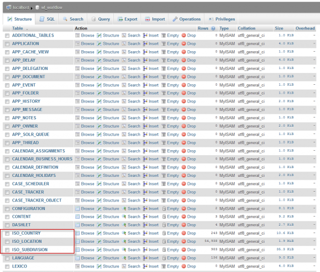
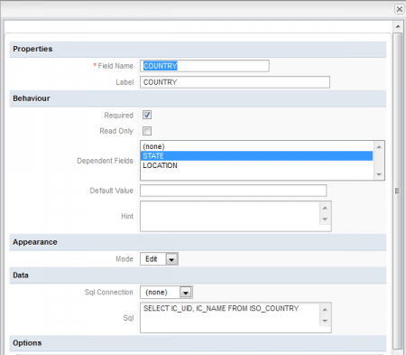
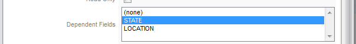
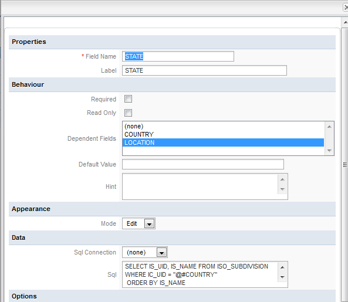
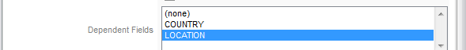
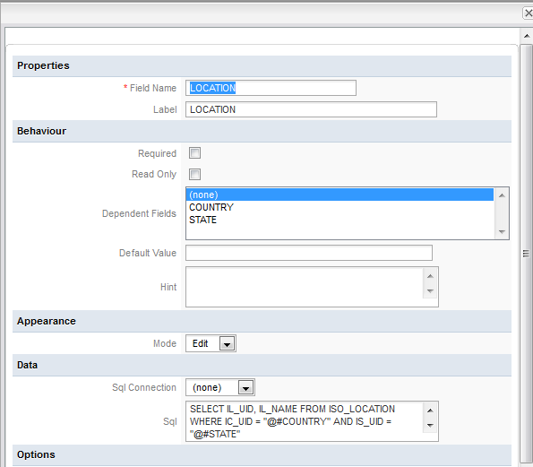
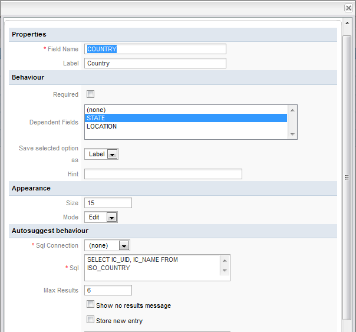
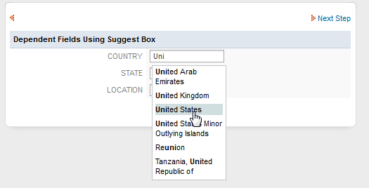
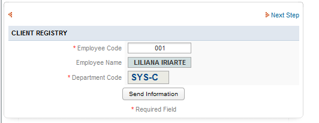

Dependent Fields
| Used by: textbox, date, dropdown, suggest. |
This property allows other field(s) to be selected as dependent field(s), and thus convert the present field into an independent field.
Normally the SQL SELECT queries used to populate DynaForm fields are only executed once when the DynaForm is initially displayed. Selecting a field to be a dependent field, allows that field to execute its SQL SELECT query whenever the value in the independent field changes. The SQL SELECT statement in the dependent field can reference the value in the independent field as a case variable which is used in the query. Reference the independent field either as a string variable @@INDEPENDENT_FIELD whose value will be enclosed in double quotes with backslashes added before quotation marks to escape them so they be safely sent as part of an SQL string:
If the value of the independent field should be treated as a number, then use @#INDEPENDENT_FIELD which inserts the value without enclosing it in double quotation marks or escaping any quotation marks:
"YYYY-MM-DD" format and datetimes in "YYYY-MM-DD HH:MM:SS" format.
In DynaForms, only textboxes, dropdown boxes and date boxes may be independent fields, while textboxes, suggest boxes, dropdown boxes and listboxes may be dependent fields. If a textbox is the dependent field, the SQL SELECT query will determine the value inserted into the field. If a dropdown, listbox or suggest box is the dependent field, the SQL SELECT query will populate the list of available options.
DynaForms can use independent and dependent fields to easily conduct searches in an external database. For instance, an organization has a database table called CLIENTS and its staff needs to search in its database for a particular client. It could design a DynaForm with an independent field which is a textbox named "ClientNameSearch". Its dependent field could be a listbox named "ClientSearchResults" which uses the following SQL SELECT statement to populate its list:
WHERE CLIENT_FIRSTNAME=@@ClientNameSearch OR CLIENT_LASTNAME=@@ClientNameSearch
Whenever a new name is entered into the "ClientNameSearch" textbox, all the clients with matching names will be displayed in the "ClientSearchResults" listbox.
Because the value of the independent field can change while the DynaForm is being used, the SQL SELECT statement in the dependent field also needs to be allowed to change so it can conduct queries with the new value. Normally the SELECT statement is fixed in the XML definition of the field, but the SQL SELECT statements for dependent fields are placed in a character data structure <![CDATA[...]]> so they won't be parsed as XML. That way the SELECT statement can be altered and the database requeried while the DynaForm is in use. For instance, here is the XML definition of the "ClientSearchResults" listbox:
defaultvalue="" sqlconnection="5821228024ab657ac40d9b3065753771" readonly="0">
<![CDATA[SELECT CLIENT_ID, CONCAT(CLIENT_FIRSTNAME, ' ', CLIENT_LASTNAME) FROM CLIENTS
WHERE CLIENT_FIRSTNAME=@@ClientNameSearch OR CLIENT_LASTNAME=@@ClientNameSearch]]>
<en>Search Results: <option name=""/></en>
</ClientSearchResults>
Note that a blank option is provided to appear at the top of the list above the search results. That way no client will be selected by default. To not have a blank option, remove <option name=""/> from the XML definition.
The independent field does not have to be limited to the WHERE clause of the SELECT statement. It can be used in any part of the statement. For instance if a DynaForm has a dropdown box named "ClientColumn" where the user can select one of the fields in the CLIENTS table, then the dependent field could have the following SQL SELECT statements:
or:
XML Definition in the independent field:
<NAME dependentfields="FIELD1[,FIELD2...]" ...> ... </NAME>
Note: If more than one dependent field, separate them with commas, but do NOT include any spaces.
XML Definition in the dependent field:
<![CDATA[SELECT ... @@INDEPENDENT_FIELD...']]>
</NAME>
Examples
Using dropdown fields
The following example shows how to create dependent fields in dropdown boxes in a Dynaform. This example queries tables which already exist in the ProcessMaker database. In this example, the STATE is defined as a dependent field for the COUNTRY, which is the independent field. When a country is selected in the first dropdown, the cities found in that country will appear as options in the second dropdown. In turn, the LOCATION is the dependent field for the STATE. When a state/province/department is selected in the second dropdown, the third dropdown box will then contain a list of locations found in the selected state/province/department.
For this example, it is required to:
- Create three dropdowns named "COUNTRY", "STATE" and "LOCATION".
- Use the tables ISO_COUNTRY, ISO_SUBDIVISION, ISO_LOCATION located in the wf_{WORKSPACE} database, which by default is named wf_workflow.

Follow these steps to create a dependent field:
1. Create a DynaForm with a dropdown field named "COUNTRY":

Add the following SQL query: SELECT IC_UID, IC_NAME FROM ISO_COUNTRY
The XML definition will be:
<en>COUNTRY <option name=""/></en>
</COUNTRY>
Defining the dependent field:
According to which country is selected in the first dropdown, the states/provinces/departments found in that country will be listed in the STATE dropdown box.
Either edit the XML code or use the graphical interface to define the dependent field:
- In the XML definition of the COUNTRY field, add STATE as a dependent field:
<COUNTRY ... dependentfields="STATE" ...> - Go to the fields handler and select COUNTRY in the list of fields. In its definition, select STATE as the dependent field:

2. Create a second dropdown field named "STATE":

The SQL query obtains the list of states/provinces/departments, based on what was selected in the COUNTRY field:
Add the SQL query:
SELECT IS_UID, IS_NAME FROM ISO_SUBDIVISION WHERE IC_UID = @@COUNTRY ORDER BY IS_NAME
Note: The independent field is enclosed in quotation marks so it will be treated as string. If the independent field is a textbox where users can enter any value, then always reference the independent field as @@name to prevent SQL injection attacks: WHERE IC_UID = @@COUNTRY
The XML definition will be:
<![CDATA[SELECT IS_UID, IS_NAME FROM ISO_SUBDIVISION WHERE IC_UID = @@COUNTRY ORDER BY IS_NAME ]]>
<en>STATE <option name=""/></en>
</STATE>
Note: It is recommended using CDATA because if HTML tags are used, they will break the XML node. CDATA allows special characters to be used without problems.
Defining the dependent field:
According to which state/province/department is selected in the second dropdown, its locations will be listed in the third dropdown which is named "LOCATION". There are two ways to define LOCATION as the dependent field for the STATE field:
- In the XML definition, define the dependent field:
<STATE ... dependentfields="LOCATION" ...> - Go to the Fields handler and select the LOCATION field in the Dependent Fields property:

3. Create a third dropdown field named "LOCATION", which is defined as a dependent field for STATE. The DynaForm now contains 3 dropdown boxes:

Add the following SQL query, which obtains a list of locations from the database, depending on which country and which state/province/department was selected by the user:
The XML definition will be:
<![CDATA[SELECT IL_UID, IL_NAME FROM ISO_LOCATION WHERE IC_UID = @@COUNTRY AND IS_UID = @@STATE
AND IS_UID NOT IN ("") ORDER BY IL_NAME]]>
<en>LOCATION <option name=""></option></en>
</LOCATION>
The final result will be:

Using a Suggest Box
In version 2.0.43 and later, suggest boxes can be used as independent and dependent fields.
Based on the example above, change the COUNTRY field from a dropdown box to a suggest box:

Keep the XML for the STATE and LOCATION as in the previous example.
Entering a country in the suggest box:

The final example will be:

Using Text Fields
In textboxes, the SQL query sets the value in the field, so if a textbox is used as an dependent field, its value will be changed when the value in the independent field changes.
This example shows how to use multiple dependent fields which depend on the value of one independent field. A table named EMPLOYEE contains the EMPLOYEE_NAME and DEP_CODE fields, where the employee's name and the code of his/her department are stored.
Then, create a DynaForm with 3 textbox fields: Employee Code, Employee Name and Department Code. When an employee code is entered in the first field, the employee's name and department codes will automatically be inserted in the other two fields.
Create the independent field which will be the "Employee Code" textbox:
<en>Employee Code</en>
</Employee_code>
Then, create the "Employee Name" textbox:
style="text-align:center;background: rgb(209, 222, 223) none repeat scroll 0% 0%;font-weight:bold;background-color:##D2D4E1;text-transform: uppercase;">
<en>Client Name</en>
</Client_Name>
Note: A style is added to this field to customize its appearance.
Finally, create the "Department Code" textbox:
style="font-size:15px; font-type:Arial;color:#084B8A;font-weight:bold">
<en>Department Code</en>
</Dep_Code>
Once the three fields are created, define the dependent fields. In this example, Employee_code is the independent field and Employee_Name and Dep_Code are the dependent fields:
dependentfields="Employee_Name,Dep_Code"
When the employee code is entered, the Employee Name and Department Code fields will be filled.
Then, in the Employee Name field, add the SQL query which will look up the name depending on the employee's code:
ProcessMaker expects two fields to be returned in dependent field queries, where the first field is the value and the second is the label used in a list of options, but textboxes only need the value, so repeat the EMPLOYEE_NAME field twice in the query. Without two fields, the query will not work correctly.
The XML definition of the Employee_Name field will be:
style="text-align:center;background: rgb(209, 222, 223) none repeat scroll 0% 0%;font-weight:bold;background-color:##D2D4E1;text-transform: uppercase;">
<![CDATA[ select EMPLOYEE_NAME, EMPLOYEE_NAME from EMPLOYEE where EMPLOYEE_CODE = @@Employee_code]]>
<en>Employee Name</en>
</Employee_Name>
Running the example:
- Entering the Employee Code

- Then, press TAB to see the result:

The two fields were automatically filled according to the employee code entered in the first field.
Dependent Fields inside grids
Available Version: 2.5.2 and later.
It is not possible to populate an entire grid as a dependent field, but it is possible to use dependent fields inside grids in version 2.5.2 and later.
Note: If needing to populate entire grids as dependent fields, see Repopulating Grids with AJAX.
The following example shows how to use a grid which lists the members of a department as a dependent field.
First, create the following table:
Table Name: EMPLOYEE
| Field | Type | Null | Key |
+-----------------+--------------+------+-----+
| DEP_CODE | varchar(5) | NO | PRI |
| DEPARTMENT_NAME | varchar(100) | NO | |
| NUMBER_EMPLOYEE | varchar(5) | NO | |
+-----------------+--------------+------+-----+
Fill the table with some values.
Then create a grid with the following fields: Department_Code (textbox), Department_Name (textarea) and Number_Employee (textbox)
The two dependent fields in the grid are Department_Name and Number_Employee. When the user enters a department code, it will return the name of the department and the number of employees in that department
<en>Department Code</en>
</Department_Code>
In Department_Name field, add the SQL query to obtain the department name based on the department code:
select DEPARTMENT_NAME, DEPARTMENT_NAME from PMT_EMPLOYEE where DEP_CODE = @@Department_Code
<en>Department Name</en>
</Department_Name>
Finally, in the Number_Employee field, add an SQL query to lookup the number of number of employees in the department, based on its department code:
select NUMBER_EMPLOYEE, NUMBER_EMPLOYEE from PMT_EMPLOYEE where DEP_CODE = @@Department_Code
<en># Employee</en>
</Number_Employee>
After defining the grid, add it to the master form. Note that dependent fields in a grid will only function when embedded in a master form.
To test the dependent fields in the grid, enter the code for a department, which in this example is 1533. Then, press TAB and the department name and the employee number will be automatically filled.